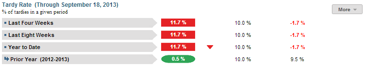
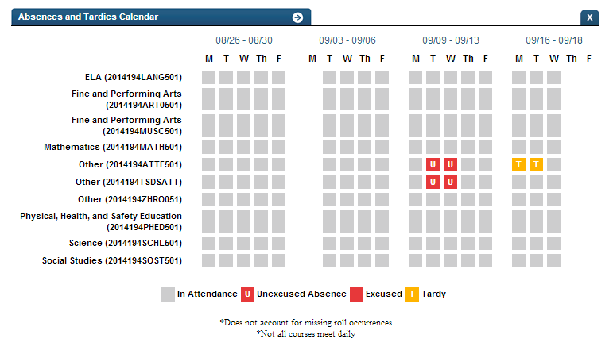

Dashboard Metrics


Tardy Rate
Background
Student Dashboard Metrics
Especially in lower grades where attendance is taken only once a day, tardy rate is a key indicator of student success, much along the lines of class period attendance for high school and middle school. Moreover, in stakeholder meetings with educators, tardy rate was repeatedly called out as a need for elementary students.
Primary Metric
- Tardy Rate: percent of days a student is tardy during the last four weeks, last eight weeks and entire year to date with comparison to campus goal for each.
Related Metric
- Daily Attendance Rate: percent of days in attendance during the past four weeks, past eight weeks and entire year to date, with comparison to campus goal for each.
User Interface
Dashboard Example
AttendanceEvent.AttendanceEventCategoryTypeId (int)
Figure 1 shows the Tardy Rate metric as seen on the student dashboard.

Figure 1 Ed-Fi Tardy Rate Metric
Status Definition
The Status Indicator is determined by campus-specific thresholds (campus goals) which are set at the district level. The default tardy thresholds set in the Ed-Fi dashboards are:
- Last Four Weeks and Last Eight Weeks – 10% (2 days in 4 weeks, 4 days in 8 weeks)
- Year to Date – 10% (number of eligible days * 10% for YTD)
The Tardy Rate is defined by using the last 4 and 8 weeks; it is actually based on the last 20 and 40 academic days.
Table 2 lists the status indicators and trend comparisons for the Tardy Rate metric as seen on the student dashboard.
Metric Indicator | Trend Comparisons | |||
Metric Name | Sub-metric Name | Metric Status Indicator | Compares: | To: |
Tardy Rate | Last Four Weeks | Red (Percentage) = if Tardy Rate is greater than or equal to campus goal Green (Percentage) = if Tardy Rate is less than campus goal | Begins 40 days into school year, no overlapping dates Current four weeks | Prior four weeks |
Last Eight Weeks | Red (Percentage) = if Tardy Rate is greater than or equal to campus goal Green (Percentage) = if Tardy Rate is less than campus goal | Begins 80 days into school year, no overlapping dates Current eight weeks | Prior eight weeks | |
Year to Date | Red (Percentage) = if Tardy Rate is greater than or equal to campus goal Green (Percentage) = if Tardy Rate is less than campus goal | current year | prior year | |
(a) The Value column displays the percentage of the period the student was tardy.
Trend Definition
Table 3 lists the trend indicators for the Tardy Rate metric. For Phase 2, the trend indicators are gray; this table is for documentation purposes only.
Trend Indicators: Objective is to indicate Tardy Rate | |||
| Up green | If the value for the current time frame is more than the 5 percentage points lower than the prior time frame | |
| Unchanged | If the value for the current time frame is less than or equal to 5 percentage points higher or less than or equal to 5 percentage points lower | |
| Down red | If the value for the current time frame is more than 5 percentage points higher than the prior time frame | |
The trend does not display if the data is for the first occurrence of the time frame since data is not available.
Periodicity
Best practice is to load the data for this metric daily.
Recommended Load Characteristics | |
Calendar | Throughout the school year |
Frequency of data load | Daily, Weekly, Monthly |
Latency | 4 weeks |
Interchange schema | Interchange-StudentAttendance.xsd |
Tooltips
The standard tool tips for the metric definition, column headers, and help functions display for this metric.
The following are tooltips specific to the Tardy Rate metric:
- '+More' indicates drill down to view ‘Tardy Detail by time frame'
 is 'No change from the prior year'
is 'No change from the prior year' is ‘Getting better from the prior year'
is ‘Getting better from the prior year' is ‘Getting worse from the prior year'
is ‘Getting worse from the prior year'
Business Rules
The Tardy Rate metric displays the percentage of instructional days a student is tardy for the following time frames:
- Last Four Weeks
- Last Eight Weeks
- Year to Date
- Prior Year
Data Assumptions
- Campus must record student tardies at the classroom level for each time frame.
- The class or period when tardy is counted must be specified.
- Student tardy reasons are recorded.
- District sets the value that drives the campus and student status thresholds.
Computed Values
When calculating this metric, the following additional rules apply:
- A tardy or early release (if captured) is not counted as an absence
- Days the student is not enrolled are subtracted from total instructional days
The length of the time frames is configurable and is defined by the district.
Table 5 defines how values are calculated. The result of the calculation displays in the Status column and Value on the student dashboard.
Metric Values | ||
Tardy Rate | Last Four Weeks | Percentage = Total number of days student is tardy / Number of instructional days in 20 academic days |
Last Eight Weeks | Percentage = Total number of days student is tardy / Number of Instructional days in 40 academic days | |
Year to Date | Percentage = Total number of days student is tardy / (Number of instructional days in year to date) * 100 | |
| Prior Year | Year to Date Tardy Rate as of final instructional day in prior school year | |
Calculation Notes
- Days a student is not enrolled are subtracted from the “Total Number of Instructional Days” in the denominator.
Data Anomalies
Anomalies
- Metrics are sensitive to when and how often the data is loaded.
- Late enrollees are likely to be missing attendance data. This calculation is not dynamic, and currently students will be presumed present for all days prior to enrollment. Detail view of tardy rate will have more options.
- If the school calendar changes, then adjust the denominator to reflect eligible days.
- Create an icon (not implement) that shows if last data load was more than a month ago.
Best practice is to use footnotes to address these anomalies.
Footnotes
Footnotes are used to provide addition data information concerning the metric. Footnotes are sequential for the entire page. Therefore, a metric's footnote may not begin with the number 1.
The following footnotes appear below the metric:
- Best practice is to footnote students transferring in that have not been present for a full time frame.
- Metrics are sensitive to when and how often the data is loaded.
- Late enrollees are likely to be missing tardy data.
Date of Refresh
Best practice is for the date of last data refresh to appear next the metric in the following format:
- (Through April 22, 2010)
Implementation Considerations
Student Identity
Maintaining a correct and consistent student identity is at the center of any education data system. Most systems use some sort of unique identifier. However, sometimes this identifier is entered incorrectly or sometimes different systems use different identifiers.
The UDM XML supports the interchange of multiple types of identifiers. The StudentReference is a complex type within the UDM to maintain the referential integrity of the student (that is, ensuring that the data associated with each student is accurately associated with the right student). The complex type of the student reference assists with implementing the accurate matching algorithm to identify a student by utilizing any of the individual attributes (e.g., Student Unique State ID, Student ID, Campus Local ID (with Campus ID), Name and Birth Date). For example, if the Student Unique State ID is unknown, you can find the student’s identity by their Student ID, First Name, Last Name and Birth Date.
Attendance and Grade Metrics for Elementary School
The Ed-Fi Standard uses a student's assignment to formal class periods to determine both attendance and grades. Most elementary schools do not have a standard methodology for capturing attendance data, including tardy rate. A teacher may take attendance in the classroom, but not formally record it. The same is true for grades, especially in kindergarten and first grade. In most cases, Ed-Fi metrics will not display attendance data for these grade levels and grades may not display in the metrics until the end of the year, if at all.
Late enrollments
For late enrollment students, the number of instructional days in a time frame requires adjustment. Specifically, subtract the days the student was not enrolled from the number of instructional days in the time frame (e.g., last 4 weeks, last 8 weeks, or year-to-date).
Classification of Days as Non-Instructional Days
For the computation of the number of instructional days, use the total count of instructional days in a time frame or utilize the school calendar to identify specific instructional days as the denominator for the percentage. The latter is a more accurate approach to calculating the metric with the caveat that this requires frequent uploading of data throughout the school year.
Students with No Tardies
When taking roll at the classroom level, campuses typically record student tardies, but do not record if a student is present in a class. The query to compute student tardies needs to account for students with perfect attendance, which is the result of null tardies.
Frequency of Uploading Data
The metric computation implementation may vary depending on the periodicity of loading the data. For example, a daily load requires that you load data only for a single day (i.e., the last instructional day). Less frequent uploads require that you load data for each day since the date of the last load.
Trend
The metric assumes that only the current year’s tardy data is loaded. In this case, if the current time frame is the first occurrence of the
- Last 4 weeks, there is no trend for current last 4 weeks and no trend for previous last 4 weeks
- Last 8 weeks, there is no trend for the previous last 8 weeks
If the previous year’s tardy data is loaded, developers have the option to compare current year to the previous year’s time frames.
Best practice is for the district to establish a precision policy of what determines no change (e.g., ±5 percentage points).
Thresholds
Best practice is to set the thresholds for each campus at the district level. A secure mechanism is required to allow the district to set and maintain those thresholds.
Database Table Scalability
Attendance is one of the largest student datasets to maintain. To limit the size of attendance data, developers may include only the current year’s data.
To aid in planning for dataset management, one benchmark from the Ed-Fi prototype testing is that the daily attendance data for roughly 48,500 students for half of the school year required 8.3 million rows, or approximately 171 rows per student.
Drill Downs
Drill Down Views
The dashboards include the option to drill down and see more detail that is associated with a metric. Table 6 lists the drill down views that are recommended for this metric.
| Details | Graph of Absence Calendar | |
| Historical | Graph of metric values compared across daily, weekly, grading period, semester, and yearly timeframes. |
Description
This drill down displays a graph of a student’s attendance, excused absences, unexcused absences and tardies by time frames for the current school year.
User Interface Notes
Dashboard Example
Figure 2 shows the Tardy Rate drill down detail.

Figure 2 Ed-Fi Tardy Rate Detail
Business Rules
The Tardy Rate drill down displays absences and tardies in calendar format for a time frame for the current school year. Each column is labeled with a time frame.
In Attendance displays in gray. Unexcused absences display in red and is labeled with a "U". Excused absences display in red. Tardy displays in yellow.
The Historical Graph allows the user to see historical data across multiple timeframes. As time passes, there are many bars to be displayed; therefore, the slider on the bottom allows the user to adjust the number of bars displayed as well as the time period shown. The timeframes for this metric were chosen based on educator feedback.